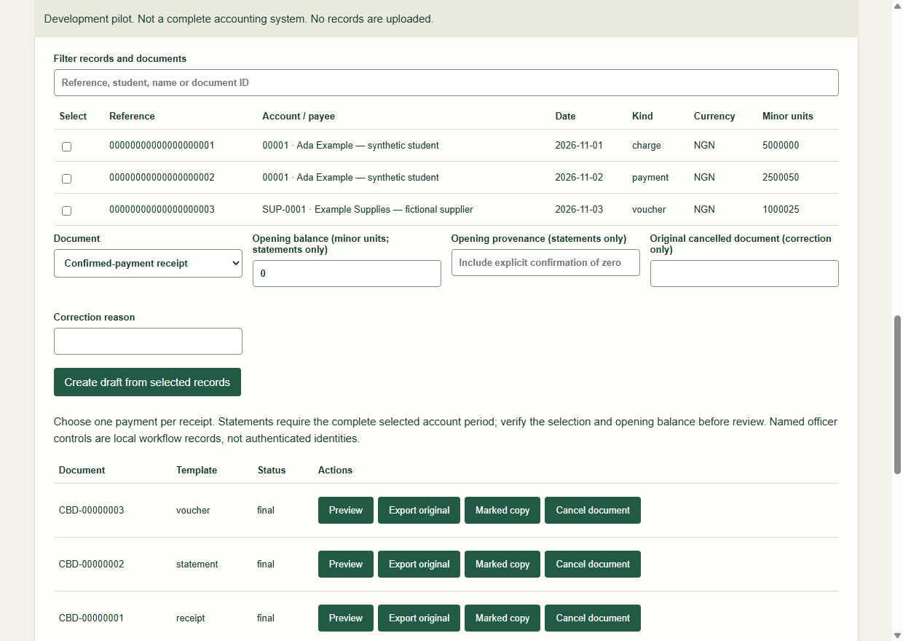

Confirmed-payment receipt
Prepare a receipt from a reviewed payment record. A screenshot alone is not treated as payment confirmation.
Open sample receiptFor bursary teams working on one Windows computer
Turn reviewed bursary records into clear, consistent receipts, account statements and payment vouchers—with core work saved on the computer, even when offline.
Preview only. There is no customer installer or paid download yet. This page does not take payment.

Three focused document workflows
Import a prepared CSV, review the validation results, then create the document your team needs.
Prepare a receipt from a reviewed payment record. A screenshot alone is not treated as payment confirmation.
Open sample receiptShow charges, credits and payments separately, with an opening-to-closing balance reconciliation.
Open sample statementPrepare a reviewable approval document. Generating a voucher does not make or prove a payment.
Open sample voucherSample files: PDFs use fictional sample data, are provided to show document layout, and are not valid for payment, clearance or student records.
Review before commit
CSV imports are staged for preview. The pilot checks required fields, duplicate references, dates, amounts and control totals, and reports row-level errors before records are accepted together.
These checks help catch data issues; they do not independently audit or verify the source system.
Designed for local work
Core calculations and PDF generation run locally with a SQLite record store and local encrypted backup and restoration. Bursary records, signatures, documents and backups are not uploaded by default.
This single-computer edition is not a shared network database and does not support officers working concurrently on separate computers.
Made to carry your institution’s identity
Set institution name, colours, academic labels, officer titles and manual signature blocks. Branding changes apply to new documents; previously finalised documents remain as issued.
Know what is included
The application does not contact banks, execute payments, independently audit imported records or grant financial clearance. Finalisation requires the configured review steps; local editable records are not tamper-proof evidence.
The current pilot has not completed officer acceptance, default-path permissions, upgrade checks or compatibility testing across Windows versions. Logo import, XLSX mapping, OCR, signature images and additional financial schedules are not available in this preview.
Release status · version 0.1.1
Contact BGM to discuss a controlled pilot. The current installer is unsigned and has only passed per-user installation and uninstallation to an isolated custom folder on one Windows 11 x64 machine. Do not disable Windows security protections.
Target: Windows 11 x64. The pilot is not offered as a customer installer. A source-code development run requires Node 24 and npm from the repository’s desktop directory; this is not a customer installation method.
Records are stored under %LOCALAPPDATA%/BGM Digital Solutions/CampusBursaryDocuments/. The local profile should not be placed on a shared/network drive. No activation or institution licence file is required for offline document generation, retrieval or export in version 0.1.1.
Commercial licence scope and existing Campus customer rights are still being confirmed. No desktop price is approved or displayed; earlier Excel or SaaS prices do not apply automatically. Paid downloads and automatic updates are disabled. Remaining checks include private installer integrity read-back, legitimate purchaser entitlement and signed-link expiry, large-file transfer, local permissions, officer acceptance and agreed commercial terms.
Release metadata is informational. The existing BGM catalogue remains authoritative for product sales and entitlements.